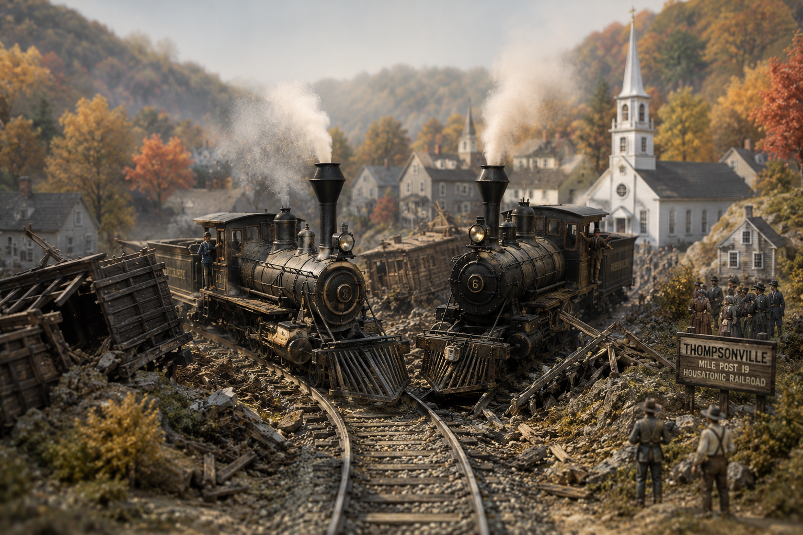

Two Trains, One Track: The Wreck That Invented Modern Management

Pull your chair up to the stove, for tonight's tale runs a good deal further east than most I set down here. It begins on a single line of track in the hills of Massachusetts, four miles west of a town called Westfield, on the fifth morning of October in the year 1841. Two trains were closing on each other at speed on that one line of rail, and here is the terrible heart of it: neither crew had the first notion the other was coming. Before the minute was out a conductor and a passenger lay dead and the wooden cars were kindling across the roadbed. It was one of the earliest deadly smashups in all of American railroading, and the very first of a particular kind. And the answer men found to it went on to shape the way near every great company on this earth is still run to this day.
Now settle in, because this is a tale about a train wreck, sure enough, but it is truly about a pattern, one that has kept its same shape from that Massachusetts curve all the way down to the thinking machines humming in your own hurried times. A mighty new invention comes along and solves one enormous trouble so handsomely that it quietly hands you a fresh one you never saw waiting there behind it.
The Boom Before the Break
You have to understand what a fever the railroad was in those years. Back in 1830 the whole of these United States had maybe two dozen miles of iron laid down, a curiosity, a rich man's toy. Ten years on it had near three thousand. That is more than a hundredfold in a single decade, faster than any man alive could rightly keep up with. Track was flung across the Northeast like thread off a spool, and the promise of it went to people's heads like cider. Goods and folk were suddenly moving at speeds that made the old canals and turnpikes look like something out of grandfather's day.
The railroad had gone and licked distance itself. A journey that once ate up days now took hours. But mark this, for it is the whole moral of the thing: every invention that kills off one old limit tends to uncover a brand new one crouched right behind it. And the railroad's hidden limit was not speed and it was not iron. It was knowing where everybody was. A stagecoach that ran late merely vexed its passengers. A train that ran late on a single shared track could bury them.
One Track, Two Trains, No System
Which is exactly the horror that came to pass near Westfield. The Western Railroad ran its trains, passenger and freight both, along a line that was mostly a single track between Worcester in Massachusetts and Albany over in New York, with here and there a siding where two trains going opposite ways were meant to slip past each other in safety. That October morning an eastbound train and a westbound train had both been ordered to meet at a place called Chester and there let one wait while the other passed. But the eastbound conductor, so far as anyone could ever piece together, never got the word. Reckoning he was to meet the other fellow much further down the line, he pressed on ahead, and the two of them came together head to head on a blind curve where neither could see a thing.
It looked like plain human blundering, and in the small way of it, so it was. But the deeper failure was in the bones of the thing. There was no dependable way to know where every train sat at a given hour. There was no clear chain of command to make an order stick once a train had rolled out of the station. There was no structure built for the express purpose of catching one missed instruction before it turned into a funeral. The lone conductor, trusted to make the right call by the seat of his trousers, had simply run clean out of the ability to keep a growing web of iron safe by himself. The machine had outgrown the men improvising around it.
The railroad did not fail because one man made a mistake. It failed because no system yet existed to make that mistake something a body could survive.
The Man Who Drew the Chart
Here is the part that lifts this tale up out of the ditch. The Western Railroad's answer did not come from a better locomotive nor a stronger rail. It came from a new way of arranging people. The road's chief engineer was a West Point man named George Washington Whistler, and if the name rings a bell it is because he fathered the painter, the one who set his old mother in a chair and made her famous. Whistler had his own reasons to get this right, too, and hard ones. His own niece had been aboard one of the trains that day.
In that same year of 1841 Whistler sat down and drew up a document with about the least stirring title a man could choose, a "Report on Avoiding Collisions and Governing the Employees." But inside those dull pages was something the world had not quite seen before. He laid out fixed roles, clear lines of authority, and formal reporting from one rung to the next, all of it modeled close on the military order he had learned at West Point and in the Army's engineers. A business historian by the name of Alfred Chandler, looking back long after, called it the first modern, carefully defined, internal organizational structure ever used by an American business enterprise. Which is to say, friend, that this wreck on a Massachusetts curve is one of the few places on the map where you can plant your boot and say out loud: management, in the sense we now mean that word, started about here.
And it did not stop there. As the tracks kept multiplying over the decades that followed, the railroads kept building out the apparatus. They set managers over separate stretches of the line. They invented the middleman whose whole job was to carry word up the chain and back down again. They standardized their books so a head office could see what a distant division was truly up to, and they drew those branching charts, box atop box, that every corporation on earth still scribbles to this day. The word "management" had scarcely existed in the age of the cottage and the workshop. The railroad turned it into a profession.
The First Billion-Dollar Beast
The payoff, I'll tell you, was a thing to behold. The railroads became the first true big business America ever grew, and then the first billion-dollar industry, at an hour when only the federal government itself commanded that kind of money. By 1860 the whole value of American railroad stocks and bonds had already climbed to somewhere near one and four-fifths of a billion dollars. And to feed that bottomless hunger for capital, the railroads all but built the modern money markets from scratch. Before them, Wall Street mostly traded shares in banks and paper of the government. The railroads' appetite turned that exchange into the roaring machine you would know today. At the flood of it, better than sixty cents of every dollar of value on the whole American stock market sat in railroad shares. An entire financial world had rearranged itself around one invention.
And so, if you think this is only an old man's yarn with no bearing on your own quick times, well, hold on a moment before you say so. Every age gets handed a new kind of speed. And every age finds out, always a little too late, that the speed was never the hard part. The keeping-track-of-it-all was. That was the railroad's homework. Something very like it is landing on desks in your own day, only now the fast thing is not a train but a machine that thinks, or near enough. Read the plain account below, and see if the pattern doesn't rhyme.
What Really Happened
On October 5, 1841, an eastbound and a westbound train of the Western Railroad collided head-on about four miles west of Westfield, Massachusetts, on a mostly single-track line running between Worcester and Albany. The two trains had been ordered to meet and pass at Chester, but the eastbound conductor never received or acted on the order and continued onto occupied track. A conductor and a passenger were killed. It was among the first fatal collisions in American railroading and one of the first traced to a failure of coordination rather than of equipment: there was no reliable system for knowing where every train was, and no clear line of authority to enforce a running order once a train left the station.
The Western Railroad's chief engineer, George Washington Whistler (a West Point graduate and the father of painter James McNeill Whistler, and whose niece had been aboard), responded in 1841 with a "Report on Avoiding Collisions and Governing the Employees." It defined roles, lines of authority, and formal reporting relationships modeled on military hierarchy. Business historian Alfred D. Chandler Jr. later described it as the first modern, carefully defined internal organizational structure used by an American business enterprise. Over the following decades railroads elaborated it into divisional managers, middle management, standardized cost accounting, and the branching organization chart, effectively inventing professional management. They also became the first American big business and the first billion-dollar industry: by 1860, U.S. railroad securities were worth roughly 1.8 billion dollars, and at the peak of the era railroad shares made up more than 60 percent of the total value of the U.S. stock market, helping build the modern capital markets in the process.
The reason the story is being retold in 2026 is the rhyme. Financial regulators and economic historians (including the PCAOB, in a widely noted speech) have openly compared today's wave of AI investment to the railroad buildout, speculative frenzy and all. The deeper parallel is structural. The railroad collapsed the cost of distance and, in the same motion, created a coordination crisis it could only solve with an institution rather than a machine. Artificial intelligence is collapsing the cost of cognitive work, and it is surfacing a familiar higher-order problem: when work can be generated faster than any human can check it, who coordinates it, and who is accountable when an automated decision goes wrong? The bet this tale makes is an old one. The winners will not be whoever builds the fastest engine. They will be whoever figures out the new org chart first.
Sources & Further Reading
- "Horrible Railroad Accident, Westfield, MA, Oct 1841," GenDisasters
- "Railroads," Lost New England (the Western Railroad and the 1841 collision)
- "Imperial Origins of the Large Corporation," Enterprise & Society, Cambridge University Press
- Alfred D. Chandler Jr., "The Railroads: Pioneers in Modern Corporate Management," Business History Review
- "Train-Wreck Management," Lean Essays (the 1841 wreck as the start of a management era)
- "Rail Track Mileage in the United States, 1830-2020," The Geography of Transport Systems
- "The Largest Investment Booms in History," From Poverty to Progress (railroad capital and the AI comparison)
- "Industrial Securities and the Stock Market," The Tontine Coffee-House (railroads and the birth of the modern NYSE)
- "Visualizing 200 Years of U.S. Stock Market Sectors," Visual Capitalist (60 percent of market cap in railroad shares)
- "Stop, Look, and Listen: The Legacy of American Railroads and the Dawn of AI," PCAOB